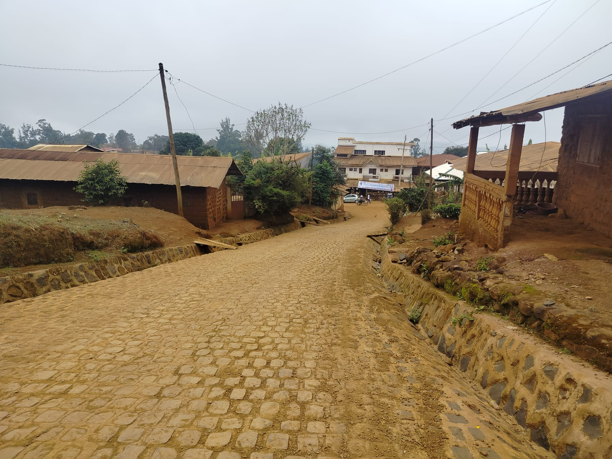
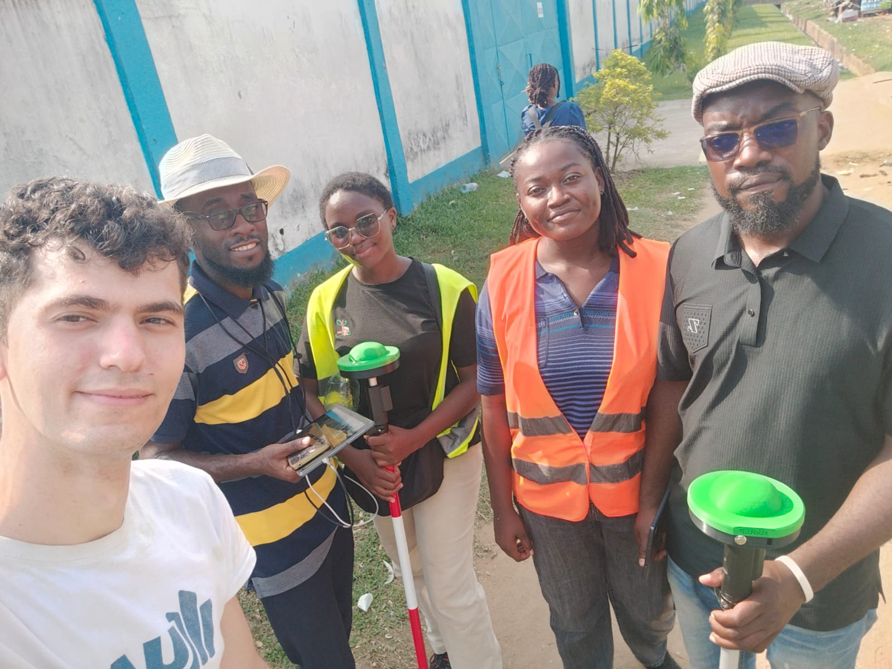
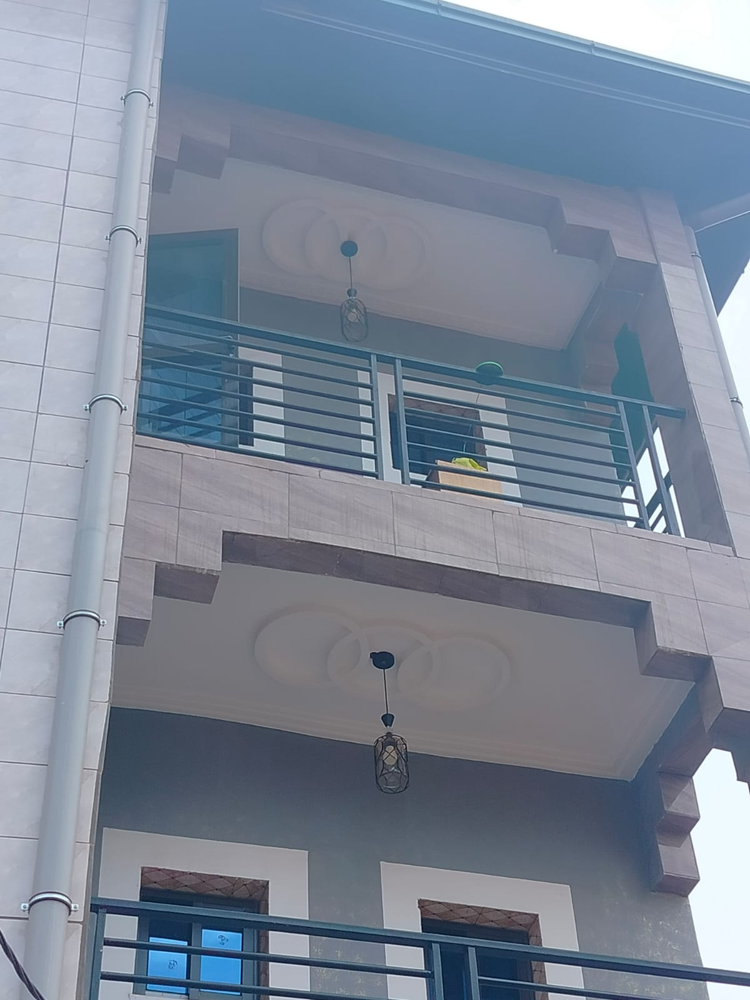
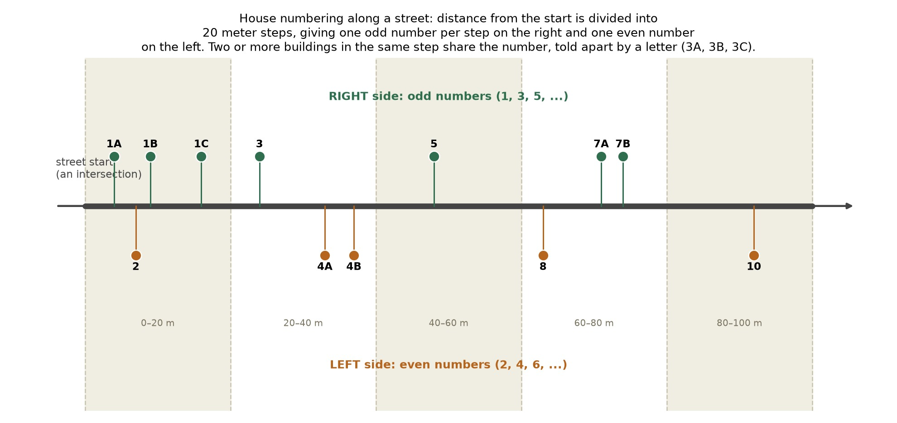

An estimated four billion people worldwide lack a reliable, usable address, with direct consequences for banking, mail delivery, emergency response, utility connection, and access to digital services and the digital economy more broadly. We work with communities to gather the geospatial data, streets, buildings, road quality, and walkability, needed to generate their own address and census system, built from open data and community input rather than a formal cadastral survey that may never arrive. Piloted in Fotouni and in the Bonamoussadi neighborhood of Douala, Cameroon.

The idea behind this project was to test new survey techniques across two contrasting pilot regions before scaling up: one dense urban neighborhood, Bonamoussadi in Douala, and one small rural town, Fotouni. In both, we recorded the position of every building, together with its land use and the surrounding street network. These pilots are now laying the groundwork for a far larger collection effort, a full census of every shop in the Bonamoussadi market, and a complete census of residents, shops, and public services across the town of Fotouni.

Low cost RTK-GNSS

Every building in both pilots was recorded twice, once with an ordinary mobile phone and once with a high precision RTK GNSS device, allowing a direct comparison of the two. A mobile phone fix is typically off by about 4 to 5 meters, a margin that is perfectly adequate for a census, where what matters is which building a record belongs to, but falls well short of what a detailed cadaster or a construction site survey demands, which is where centimeter level GNSS precision becomes essential. A survey grade GNSS receiver normally costs around 30,000 dollars, putting it far out of reach for most communities. UPM, one of our project partners, designed a custom GNSS device that reaches that same precision using low cost Arduino compatible components from Ardusimple, for under 400 dollars. Reaching that precision takes more than a single device in places without a government correction service. One unit stays fixed in place as a base station, at a known location, continuously comparing what it measures against what it should measure. That discrepancy is a correction, which the base station broadcasts in real time to every other device in the field, known as rovers, so each can apply it to its own position instantly. We built a simple on site system to carry that correction from the base station to the rovers, over both radio and internet, reaching up to 50 kilometers out. We are now building local capacity at IUC so these devices can eventually be manufactured on site in Cameroon rather than shipped in.
Addressing system
Interactive visualization of the street numbering logic — see the full demo or the detailed technical writeup.
We start from OpenStreetMap, already a remarkably complete map of most towns, and update it with our own survey results, so every building and road is properly represented. OpenStreetMap records a street as separate lines between intersections, with no record of which of them share a real, single identity. We work that out ourselves, comparing the angle and road rank at every crossing, so even unnamed streets get a consistent street ID. An interactive map is then shared with the local community, so residents can name their own streets and correct anything the algorithm got wrong, with any gaps found along the way fed back into OpenStreetMap for the next town. Built this way, the process runs directly on OpenStreetMap data, and reaching full precision needs only a light local check, not a separate survey.

Once a street has its ID, every building near it is matched to the nearest point along its length, and numbered by distance from wherever that street starts, usually an intersection. A street has two ends, so we pick a start for each one. In a radial town like Fotouni, that is whichever end sits closer to a central reference point, the main intersection of the town. In a grid city like Bonamoussadi, it is whichever end lies further along a chosen direction across the whole grid. That distance is then divided into steps of 20 meters. The first 20 meters gets number 1 on the right side and number 2 on the left, the next 20 meters gets 3 on the right and 4 on the left, and so on down the street. If more than one building falls within the same 20 meter step, they share the number and are told apart with a letter, 3A, 3B, 3C. Numbering this way keeps the system flexible. A street can keep growing, and a new house can be added anywhere along it, without ever having to renumber its neighbors.
Interactive map with the surveyed buildings — explore the building survey. Click anywhere on the embedded map to generate an address.
This survey work is now growing into a full community census of Fotouni, currently being carried out by local students. Each household is recorded with its population, income, gender, and age breakdown. Each business is recorded with its opening hours, products sold, and the jobs it provides. Public services, schools, health posts, water points, and similar facilities, are recorded with their capacity and their current level of use. Once complete, this data feeds directly into the address algorithm, giving Fotouni both its first formal address system and its first detailed local census, built by and with the community rather than imposed on it.
Road condition
Interactive map with the road quality results on a few test routes — see the full writeup.
Reliable road condition data barely exists across most low and middle income regions. As a small experiment during our trips between Douala and Fotouni, we used an ordinary smartphone's accelerometer and GPS to sense how rough a road actually is while riding in a regular car, with no specialized equipment required. Twelve drives across five trips were logged and classified into four road quality classes this way, hinting at how a low cost first map of where the road network genuinely degrades could be built at a larger scale.
15-min city
Interactive map with the proximity results — see the full writeup.
The 15 minute city idea holds that a good neighborhood places daily essentials, health, education, food, work, leisure, within a short walk of home. On this measure, Fotouni and Bonamoussadi are places North America could genuinely learn from. Fotouni, a rural, low density town, still offers a striking concentration of public buildings within reach, most children can walk to school, and most residents have a bar, a shop, and many third places (additional places besides home and work) within walking distance. Neither town was designed around the car, and it shows in how much of daily life unfolds within walking distance.